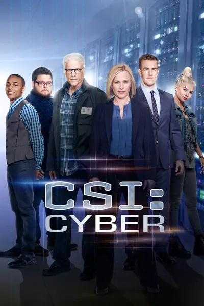

Сериал · 2015 · Драма, Криминал
Агент ФБР Эйвери Райан возглавляет отдел по борьбе с киберпреступностью: расследования касаются взломов радионянь, атак на автомобили и торговли данными в даркнете. Это процедурал, следующий всем канонам франшизы CSI: технологии объясняются «на пальцах», а на экране мелькает вечный процесс отслеживания маршрута (trace route). Сериал идеально подходит для легкого знакомства с темой кибербезопасности тем, кто не хочет читать профильную литературу, но для специалистов в этой сфере он покажется слишком упрощенным.
FBI agent Avery Ryan leads a cybercrime unit: cases about hacked baby monitors, attacks on cars and darknet data markets. A procedural following every CSI franchise rule — technologies explained on fingers and the eternal 'trace route'. Perfect as a 'light entry' into cybersecurity for people who do not want to read books — and too simplified for anyone working in the field.